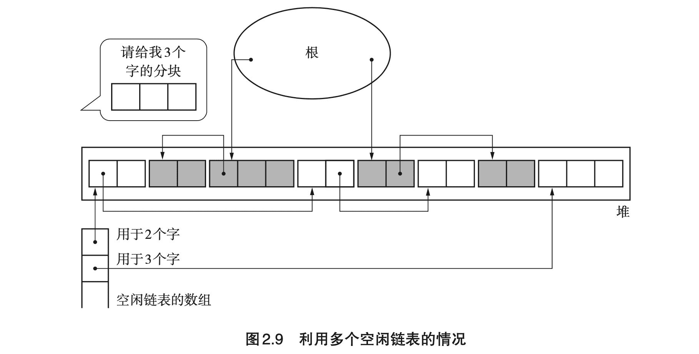
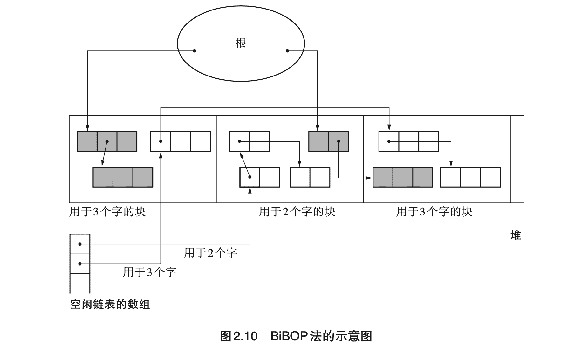
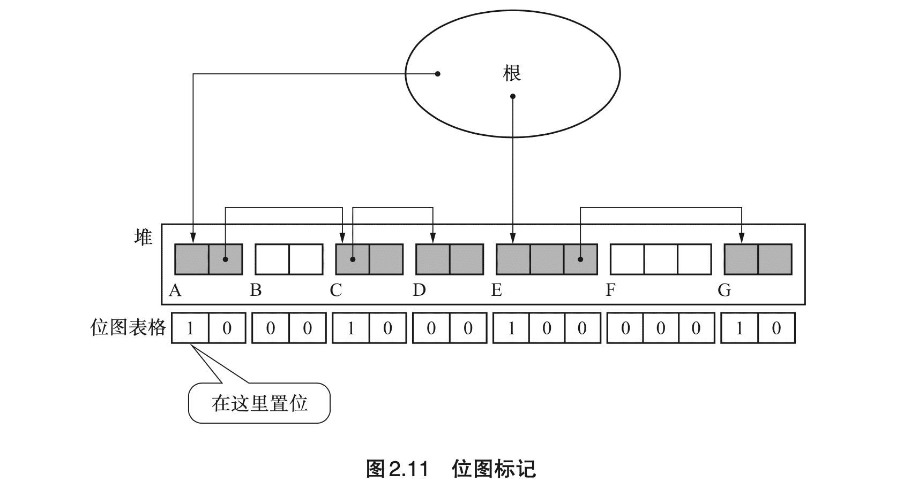
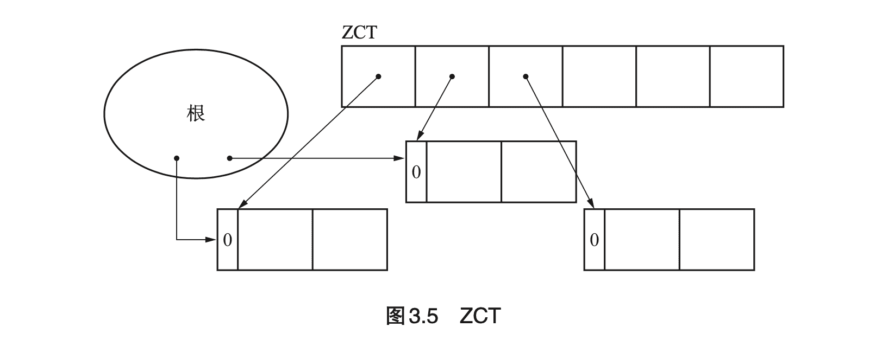
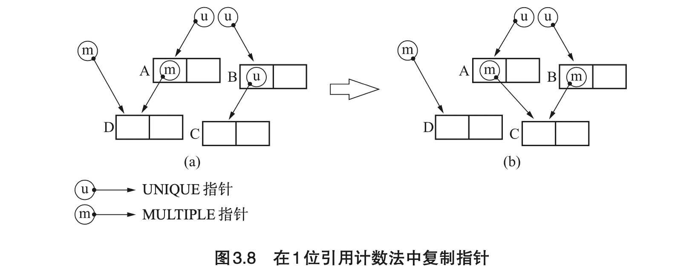
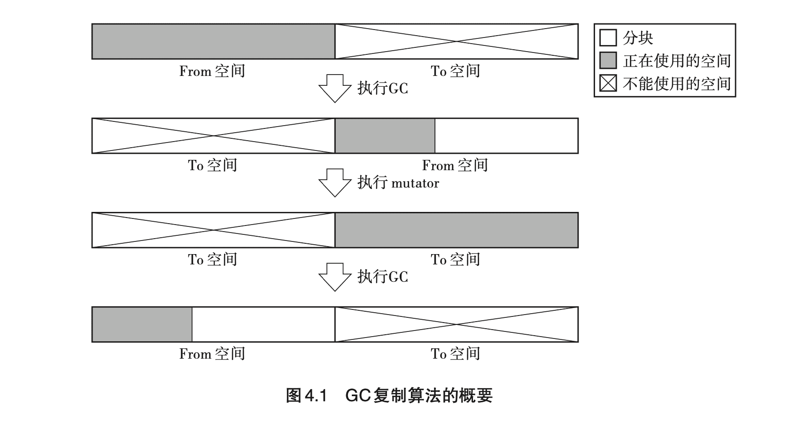

《垃圾回收算法与实现》读书笔记（一）
为了进一步了解 Wasm GC 提案，遂找本书来看看。
0. 序章
- （Page：3）最初的 GC 算法是 John McCarthy（Lisp 之父）在 1960 年发布的。
- （Page：4）三种基本的 GC 算法：
- “标记-清除”算法；
- “引用计数”算法（具有“循环引用”的问题）；
- “GC 复制“算法；
1. 学习 GC 之前
- （Page：12）GC 中的对象：由以下两部分组成：
- 头：包含有对象的大小和种类信息，由 GC 算法进行控制和使用；
- 域：对象使用者可以直接访问的内存部分（指针及非指针类型数据）；
- （Page：17）GC 中的“根”：是指向对象的指针的“起点”，可以被 mutator 直接引用（调用栈、寄存器、全局变量空间）。
- （Page：19）GC 的评判标准：
- 吞吐量：堆内存大小 / GC 管理内存花费的时间；
- 最大暂停时间：因执行 GC 而暂停 mutator 的最长时间；
- 堆使用效率：可用的堆空间越大，GC运行越快；越想有效地利用有限的堆，GC 花费的时间就越长；
- 访问局部性：把具有引用关系的对象安排在堆中较近的位置，就能够提高在缓存中读取所需数据的概率（GC 对象重排）；
2. “标记-清除”算法
算法由“标记”以及“清除”两个阶段组成。其中，标记阶段负责把所有活动对象都做上标记；而清除阶段则是把那些没有被标记的对象（非活动对象）进行回收。
- （Page：26）标记阶段使用“深度优先搜索（DFS）”会比“广度优先搜索（BFS）”占用更低的内存使用量。
- （Page：28）GC 内存分配策略：
- First-fit：在空闲链表中一旦发现大于等于待分配大小的分块时便直接返回该分块；
- Best-fit：遍历空闲链表，返回大于等于待分配大小的最小分块；
- Worst-fit：找出空闲链表中的最大分块，将其分割为待分配大小与剩余大小的两个分块。目的是将分割后的剩余分块最大化；
- （Page：28）“标记-清除” GC 算法的几个阶段：标记（活动对象）、清除（非活动对象）、分配（内存）、合并（清除阶段进行）；
- （Page：29）“标记-清除” GC 算法的优点：
- 实现简单；
- 与保守式 GC 算法兼容；
- （Page：29）“标记-清除” GC 算法的缺点：
- 碎片化（可用“压缩”或 “BiBOP” 法优化）；
- 分配速度（可用“多空闲链表”法优化）；
- 与 COW 不兼容（可用“位图标记”法优化）；
- （Page：32）使用“多空闲链表”法优化空闲链表查找速度：

通常，该方法会为分块大小设定一个上限，分块如果大于等于这个大小，就全部采用单独的一个空闲链表来进行处理（locality）。
- （Page：34）利用 “BiBOP（Big Bag Of Pages）法”解决 “GC 标记-清除”算法中的“碎片化”问题。算法思想：将大小相近的对象整理成固定大小的块进行管理，即把堆分割成固定大小的块，让每个块只能够配置同样大小的对象。

BiBOP 法原本是为了消除碎片化，提高堆使用效率而采用的方法。但像上面这样，在多个块中分散残留着同样大小的对象，反而会降低堆使用效率。
- （Page：35）位图标记法：收集堆中各个对象的标志位并表格化，不跟对象本身一起管理。在标记时，不在对象头中置位，而是在“位图表格”中单独处理（实现方式：散列表、树形结构、数组等）。

优点：
- 与 COW 兼容；
- 清除操作更加高效；
- （Page：38）延迟清除法：可用于减小 GC 的最大暂停时间。
3. “引用计数”算法
- （Page：43）该方式将内存管理与 mutator 同时运行（GC 标记-清除只会在没有分块的时候才将垃圾一并回收）。
- （Page：44）“引用计数”算法的优点：
- 可即刻回收垃圾（引用数值为 0 后会立刻将自身连接到空闲链表中）；
- 最大暂停时间短（仅在 mutator 更新指针时进行 GC）；
- 没有必要沿指针查找；
- （Page：45）“引用计数”算法的缺点：
- 计数器值的增减处理繁重；
- 计数器需要占用很多位；
- 实现繁琐复杂；
- 循环引用无法回收；
- （Page：46）“延迟引用计数”法：使用 ZCT（Zero Count Table）结构存储引用计数变为 0 的对象。只有在 ZCT 无法存放对象时，再查找整个 ZCT 中引用计数为 0 的对象，并进行释放操作。

- 优点：减轻了因根引用频繁变化而导致的计数器增加带来的负担；
- 缺点：损失了“引用计数”的一大优势 — 可立即回收垃圾；
- （Page：50）“Sticky 引用计数”法：减少引用计数器的位宽。对于溢出的计数，可以选择将其作为“永生对象”；或使用
“GC 标记-清除”进行管理。 - （Page：52）“1 位引用计数”法：是 Sticky 引用计数法的一个极端例子，即引用计数器只有 1 位大小（表示被引用次数是 1 次或多次）。

- 优点：不容易出现高速缓存缺失，且一定程度上节省内存消耗；
- 缺点：需要单独处理计数器溢出的情况；
- （Page：55）“部分标记-清除”算法：只对一部分对象使用 GC 标记-清除算法（这里用于查找非活动对象）。
在该算法中有四种对象类型：
- 黑：绝对不是垃圾的对象（对象产生时的初始颜色）；
- 白：绝对是垃圾的对象；
- 灰：搜索完毕的对象；
- 阴影：可能是循环垃圾的对象；
4. “GC 复制”算法
即：把某个空间内的活动对象复制到其他空间，再把原空间里的所有对象都回收掉。原空间一般被称为 “From 空间”，存放活动对象的新空间被称为 “To 空间”。
- （Page：67）“GC 复制”算法的大致流程：

（待更新）